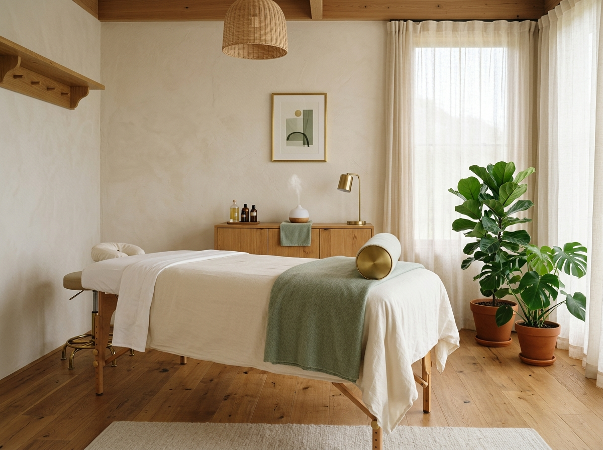

Atmosphere
Soft light & quiet transition
Buffer time between appointments keeps the space calm, private, and free of crowded waiting areas.

Thoughtful spaces, clear explanations and an unhurried conversation before any session begins.

Explore a calm environment where the details of a visit are explained clearly and your comfort remains central.

Natural materials, warm light and a considered pace create a welcoming setting for conversation and complementary care.
Specific amenities, treatment facilities and practitioner services should be confirmed with the centre before publication.
Plan your first visit
— The Stillpoint approach
Share what brings you here and what you hope to understand.
Discuss possible approaches, limitations and precautions.
Decide whether a complementary session feels appropriate.
Review comfort and next steps with the practitioner.
Every room element—from acoustic stillness to natural textiles—is arranged to help you settle comfortably.
Buffer time between appointments keeps the space calm, private, and free of crowded waiting areas.
Fresh cotton and warm support cushions tailored for posture comfort during seated or reclined sessions.
Clear fee details, expected sensations, and practical aftercare points shared openly before you leave.
Start with the therapy guide, or simply ask us a question. There is no pressure and no obligation.